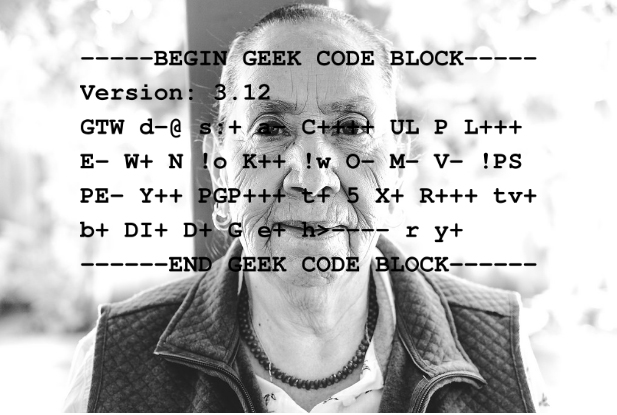
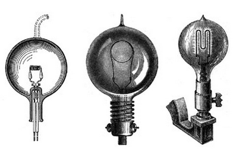

Computer Science Digital Porfolio
Coding the Past Project Summary:

There’s a wealth of information all around us that we can learn from hearing the stories of others. We can hear this from folks in our families, in our communities, and at our institutions. In this project, I became a field researcher, conducting research on the personal history of a family member or community member, tracing their personal and geographic trajectory as well as interactions with historical moments. I will then code the information onto a website in Computer Science.
A Timely Solution Project Summary:

In 2018, we can do amazing things with our technology – cars run on electricity; we can manipulate genetic material; we can have real-time video conversations with people in the world’s most remote regions. But we didn’t just arrive at all of this new and dynamic technology. The Industrial Revolution of the 18th-19th Centuries laid the foundation for the luxuries that we enjoy today. I will then code the information onto a website in Computer Science.